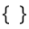

Jeżeli chcesz zobaczyć dokładniejszy opis specyfikacji Kliknij tutaj.
Ta strona została napisana w języku HTML 4.01 (1999).
Strony, które nie tylko działają, ale też wyglądają
Znaczniki w html zapisuje się zaczynając od <, następnie nazwa znacznika, a na końcu >. Do niektórych znaczników można dodać też atrybuty, wtedy zaczyna się od <, potem nazwa znacznika, potem atrybuty i ich wartości np. href="link" itp, a na końcu >
<link> - Połącznie html z zewnętrznymi plikami, np. css, js.
<meta> - Metadane dokumentu, wartości nie pobierane.
<title> - Tytuł strony. wyświetlany w pasku przeglądarki lub na liście stron.
Nagłówki od największego (h1) do najmniejszego (h6).
Przykładowe użycie <pre> do diagramu ASCII:
________
/ /|
/ / |
/ / |
|-------| /
| | /
| | /
|-------|/
Przykłady użycia atrybutu <hr>:
Do tych 2 list, do wszystkich podpunktów, wykorzystuje się znacznik <li>.
<li> - Element listy uporzadkowanej i nieuporządkowanej - każdy z elementów w tych listach musi znajdować się w <li>.
Znacznikiem wewnętrznym, listy definicji jest <dt> oraz <dd>.
<dt> - Termin w liscie definicji.
<dd> - Wyjaśnienie terminu w liscie definicji.
<blockquote> - Cytat blokowy - wyróżnia dłuższe fragmenty cytatów lub tekstów z innych źrodeł.
Przykład:
"Ignacego Łukasiewicza znamy jako wynalazcę lampy naftowej. Dzisiaj, kiedy lampa naftowa przeszła do lamusa techniki, ustąpiwszy miejsca doskonalszym sposobom oświetlenia, wynalazek stracił swoją pierwotną rangę. Blask żarówek i świetlówek nie przyćmił jednak samej postaci naszego rodaka, przeciwnie - na tle dzisiejszgo stanu techniki jeszcze wyraźniej rysuje się smiałość jego pomysłów, wielkość jego dzieła, pionierska rola Łukasiewicza w położeniu podwalin pod wielkie przeobrażenia świata, których dzisiaj jesteśmy świadkami."
~ Zbigniew Przyrowski w "Światło z ziemi" z 1973 r.
Przyklad:

Takiego gifa lub zdjęcie można dodać w taki sposób:
<img> src="nazwa pliku.rozszerzenie (np. XBM/PPM, gif, png, jpg)."

Znacznik <img> posiada kilka atrybutów, między innymi alt.
alt, to alternatywny opis obrazu na stronie, jeżeli obraz się nie wczyta alt wyswietli się zamiast niego.
Przykład: alt="przykładowy alternatywny opis obrazu".
<DOCTYPE> - to znacznik deklaracji wersji języka html.
O to jak należy go wpisać w html 4.01:
<!DOCTYPE HTML PUBLIC "-//W3C//DTD HTML 4.01//EN" "http://www.w3.org/TR/html4/strict.dtd">
NIE PODAWAJ PRAWDZIWYCH DANYCH W INTERNECIE, JEŻELI NIE JEST TO KONIECZNE, MOŻE TO GROZIĆ ICH KRADZIEŻĄ!
<code> - Służy do zaznacznia fragmentów kodu.
| <th> - nagłówek | <td> - komórka | |
|---|---|---|
| <th> - nagłówek | <td> - komórka | |
| <td> - komórka | <td> - komórka | |
| <td> - komórka | ||
<script> - Umożliwia pisanie lub podłączanie zewnętrznych skryptów, czyli funkcji programu (najczęściej JavaScript).
NOWE!!!
Odnosząc się do tego skryptów, które w poprzednej wersji były bardzo ubogie w możliwości, w wersji html 4.01, nabrały kolorytu.
Teraz między innymi oficjalnie można łączyć zewnętrzne pliki .js, dzięki czemu łatwiej utzrymać porządek w kodzie.
Z tego powodu składnia się troche zmeniła.
Pisanie skryptu bezpośrednio w pliku html:
<script> type="text/javascript" > "treść skryptu" </script>
Pisanie skryptu w osobnym pliku
<script> type="text/javascript" src="nazwa_pliku.js"></script>W tym przypadku jest to akurat JavaScript.
Nastepny problem to fakt, że większość osób niezna tego języka i jego funkcji, więc zostaną one tutaj opisane
Pierwszą operacją będzie alert, umożliwia on wysyłanie komunikatu nastronie, który wyświetla się w wyskakującym okienku.
function alert(){
alert("Witaj na oficjalnej stornie, o standardach internetowych. W tym HTML 4.01, CSS oraz JS.");
}
Zaczynając od początku mamy function, czyli po prostu funkcje, dzięki nie po przeprowadzniu jakichś obliczeń raz mamy już zapamiętane jaki był ich przebieg, dzieki, czemu wystarczy się do niej odnieść, aby powtorzyć tak ową funkję
Następnie jest nazwa funkcji, funkcje muszą mieć nazwy, aby dało się je identyfikować w kodzie.
Potem mamy klamry"{}", które oznaczają zawartość funkcji.
Następnie jest działanie, w tym przypadku alert, czyli własnie to wyskakujące okienko.
To co jest na prawo od działania, to zazwyczaj atrybuty i znajdują się w nawiasach, w tym przypdku mamy alert o wartości "Witaj na oficjalnej stornie, o standardach internetowych. W tym HTML 4.01, CSS oraz JS.".
Jest to wartość w stringu, czyli w ciągu znaków, ciąg znaków to taka jakby tablica indekoswana, gdzie każdy znak ma osobny indexs, ale do tego przejdziemy potem ,najważneijsze jest to że ten typ danych, może przechowywać wszystkie znaki.
Jak już jesteśmy w temacie typów danych, to możemy je po krótce omówić.
Pierwszy, czyli string, już znamy. Następny jest Undefined, czyli zmienna, bez wartości.
Na co komu zmienna bez wartości?
Przydaje się ona dla tego, że możesz stworzyć zmienną bez wartości, a następnie ją nadpisać.
Kolejny jest null czyli wartość pusta, niby to samo co poprzednie, ale jednak wartość jest, tylko ta wartość jest pusta, co ozancza, że można się do niej odnieść, ale nic nie wnosi.
W końcu zaczynają się ciekawe typy danych, a więc boolean, czyli wartość fałszywa lub prawdziwa, boolean, posiada tylko dwie wartości, true lub false, dzięki temu można przypisać mu wartość wyniku jakiegoś działania, jako np. prawdziwe, bo wynik był poprawny dla danego twierdzenia, abo można wysłać mu fałsz, czyli wartość błedną dla danego zadania, dzięki temu mogą zostać wykonane dwa rózne wydarzenia, w zależności od prawdziwości wartości, względem oczekiwanego rezulatu.
Następnie mamy number, czyli typ, który pozwala przechowywać liczby, ale nie tylko. Wartość typu number, moze przechowywać takie wartości jak NaN, czyli nie jest liczbą lub Infinity, czyli nieskończoność.
A na sam koniec, jedyny w swoim rodzaju Object, to jedyny typ złożony w js.
Odpowiada za przechowywanie wartości obiektowych, których w js jest pełno, a z czasem, mogę poręczyć, że pojawi się tylko coraz więcej.
Do wartości typu object, należą, takie elementy jak, tablice Array, czyli tablice indeksowae, od 0 do wyznaczonego maximum. Funkcje, czyli instrukcje działań, które przyśpieszaja pisanie, oczyszczają kod z niepotrzebnych linijek, a jednoczesnie, zabezpieczają sprzęt i dziłanie programu.
Do innych klas elementów mieszczących się w typie danych Object, należą Math(Zbiór funkcji matematycznych) oraz Date(zbiór wartości czasowych).
Dodatkowo do elemntów obiektowych należą równierz RegExp, Error, oraz Number, String i Boolean, tyle że w wersji obiektowej, a różnica w pisowni, jest w pierwszej, małej, bądź dużej literze.
RegExp odpowiada za zauważanie schematów, wzorców. Poza możliwością true/false, jest jeszcze wersja z null. Można go zastosować np. do sprwadzania, czy mail został poprawnie wpisany, przez użytkownika.
Natomiast Error, słuzy do tworzenia własnych błedów, ponieważ, błędy nie wychwycone, z reguły psują działanie całej reszty kodu.
Tutaj formularz z zastosowaniem tych elemetnów, a pod nim wytłuamczenie.
<xmp> - niepraktyczny
<plaintext> - niepraktyczny
<font> - uznany za przestarzały i zastąpiony css.
<center> - uznany za przestarzały i zastąpiony css.
<u> - uznany za przestarzały i zastąpiony css.
<basefont> - uznany za przestarzały i zastąpiony css.
<strike> - uznany za przestarzały i zastąpiony css.
<s> - uznany za przestarzały i zastąpiony css.
<big> - uznany za przestarzały i zastąpiony css.
<small> - uznany za przestarzały i zastąpiony css.
<tt> - uznany za przestarzały i zastąpiony css.
<applet> - zastąpiony przez <object> lub <embed>.
<dir> - przez podobne działanie zastąpiony <ul> i <ol>.
<isindex> - usunięty całkowicie ze względu na nie optymalne działanie.
<menu> - przez podobne działanie zastąpiony <ul> i <ol>.
Niezalecane znaczniki
Znaczniki typu frames - powodują problemy z nawigacją i dostępnością
<listing> - lepiej uzywac <pre>.
<i> - zaleca się zastąpić <em> lub <strong>
<b> - zaleca się zastąpić <em> lub <strong>
bgcolor - uznany za przestarzały i zastąpiony css.
text - uznany za przestarzały i zastąpiony css.
link - uznany za przestarzały i zastąpiony css.
vlink - uznany za przestarzały i zastąpiony css.
alink - uznany za przestarzały i zastąpiony css.
bordercolor - uznany za przestarzały i zastąpiony css.
cellpadding - uznany za przestarzały i zastąpiony css.
cellspacing - uznany za przestarzały i zastąpiony css.
width - uznany za przestarzały i zastąpiony css.
height - uznany za przestarzały i zastąpiony css.
align - uznany za przestarzały i zastąpiony css.
border - uznany za przestarzały i zastąpiony css.
hspace - uznany za przestarzały i zastąpiony css.
vspace - uznany za przestarzały i zastąpiony css.
size - uznany za przestarzały i zastąpiony css.
color - uznany za przestarzały i zastąpiony css.
valign - uznany za przestarzały i zastąpiony css.